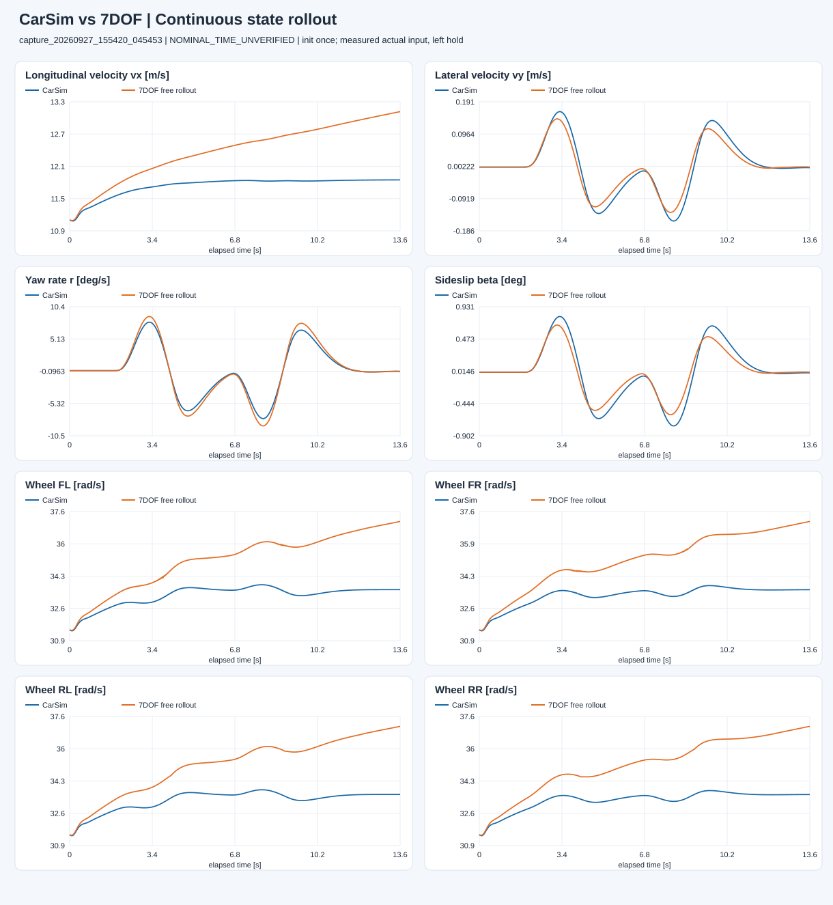
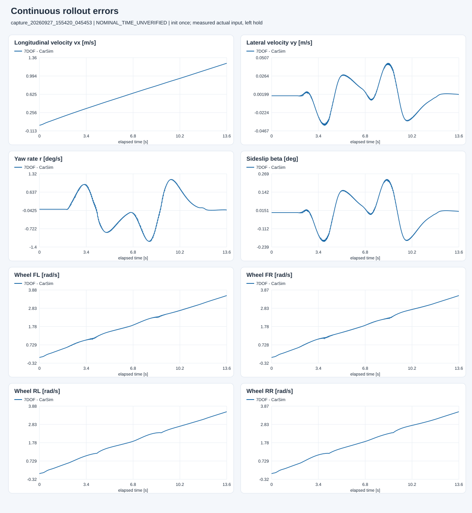
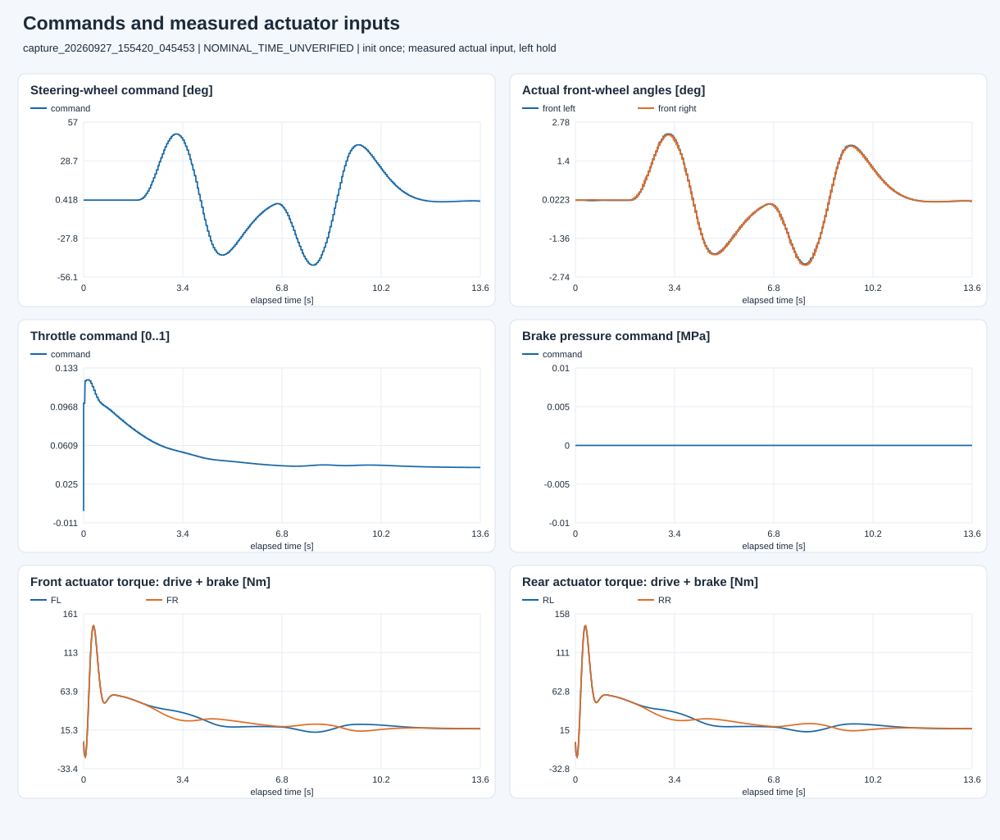

E:\modelcodeE\DRL_MPC\DRL_MPC\carsim_rl\artifacts\dynamics7dof\capture_20260927_155420_045453
蓝色为 CarSim；橙色为从同一初始状态连续积分的 7DOF。角速度图用 deg/s，CSV 与指标保持 SI。


先确认实际前轮角存在期望激励、实际制动扭矩为负，再解释状态误差。

排除前 0.1 s 和终止行。RMSE、MAE、最大绝对误差均使用各状态 SI 单位；零方差附近不计算百分比精度。
| 状态 | RMSE | MAE | 最大绝对误差 |
|---|---|---|---|
| vx_m_s | 0.735624 | 0.64529 | 1.25078 |
| vy_m_s | 0.0190058 | 0.0137163 | 0.0432869 |
| yaw_rate_rad_s | 0.00979198 | 0.00722857 | 0.0208551 |
| omega_fl_rad_s | 2.11529 | 1.86494 | 3.55621 |
| omega_fr_rad_s | 2.11629 | 1.86517 | 3.55347 |
| omega_rl_rad_s | 2.12099 | 1.87056 | 3.55609 |
| omega_rr_rad_s | 2.12218 | 1.87094 | 3.55418 |
完整指标、独立的一步预测诊断及保持当前值基准见 metrics.json；逐点数据见 comparison.csv。
判断顺序：实际输入是否正确 → 初值/单位/参数与时间 → 符号、幅值、相位 → 长时漂移。 当前没有全工况“通过阈值”，一次曲线吻合不能代替独立工况验证。